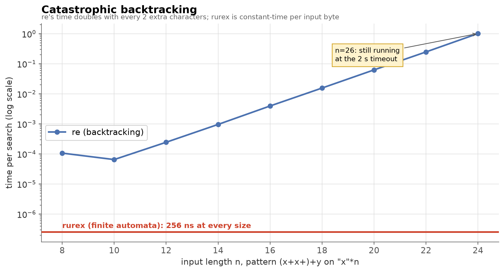
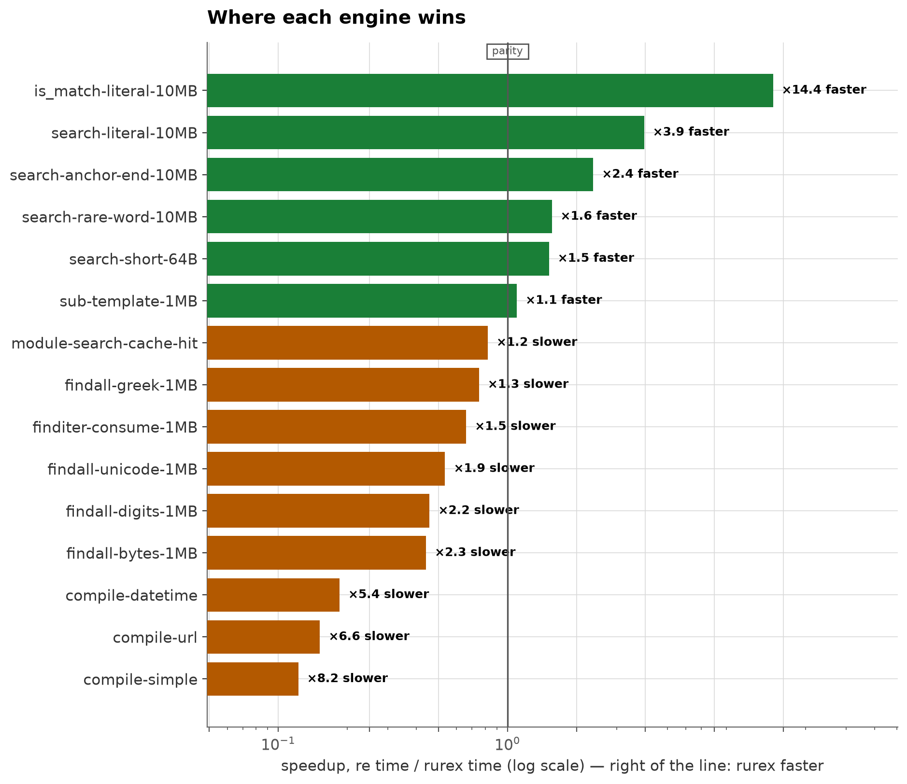
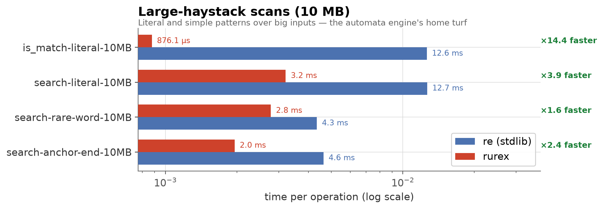
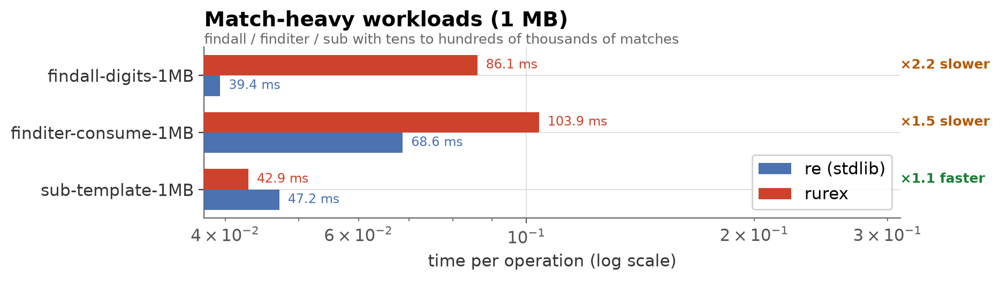
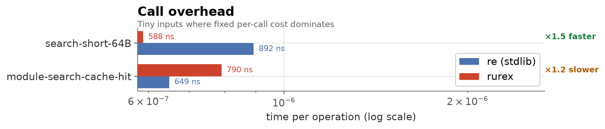
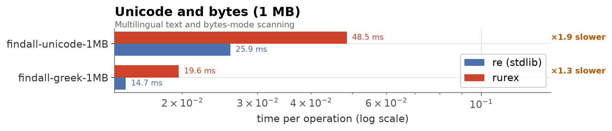
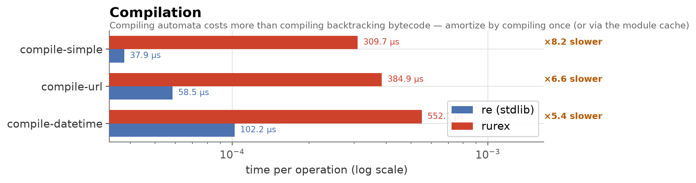

rurex vs reHow the linear-time engine compares to the standard library's backtracking engine, measured end to end from Python — including every bit of object construction a real user pays for.
The short version: rurex wins where scanning dominates (large
inputs, rare matches — up to 14× faster), re wins where match
extraction dominates (hundreds of thousands of small matches — about
2× faster) and at compilation (about 6–8× faster). And one
class of input exists where re simply cannot finish at all:

That chart is the reason rurex exists. For (x+x+)+y over n
repeated x characters, re's time doubles with every 2 extra
characters — 1.0 s at n=24, still running at the 2-second timeout at
n=26 — while rurex answers every input in ~250 ns, because finite
automata cannot backtrack. This is a safety property (ReDoS
resistance), not a speed feature: any pattern, any input, worst case
O(m·n).

Every measured case, sorted. Green: rurex faster. Orange: re faster.
timeit-style auto-calibrated iteration counts
(≥ 0.2 s of work per measurement), 5 repeats, median reported.maturin develop --release (opt-level 3, fat LTO). Debug-profile numbers would be
meaningless.re compile cache neutralized. For the compile cases the
harness calls re.purge() before every re.compile(), because
re.compile is backed by an internal cache — otherwise re would
be timed on a cache hit (~300 ns) against rurex's real compilation.
rurex.compile is uncached by design; module-level functions have
their own bounded cache on both sides (the dispatch case measures
cache hits on both).| | |
|---|---|
| CPU | Intel Core i5-8350U @ 1.70 GHz |
| OS | Linux 6.12 (Debian 13) |
| Python | CPython 3.13.5 |
| rurex | 0.1.0, release profile (opt-level=3, LTO=fat) |
| opponent | stdlib re (same interpreter) |
Numbers are machine-specific; expect different absolute values and somewhat different ratios elsewhere. Reproduce with the commands below.
Literal and simple patterns over big inputs — the automata engine's
home turf. The literal is_match case is nearly pure prefilter
(memchr-style scanning in SIMD), which is why it is 14× faster.

| Case | re | rurex | Verdict |
|---|---:|---:|---|
| is_match literal, match at end | 12.6 ms | 0.88 ms | rurex ×14.4 |
| search literal, match at end | 12.7 ms | 3.2 ms | rurex ×3.9 |
| search rare word (zebra\d{4}) | 4.3 ms | 2.8 ms | rurex ×1.6 |
| search anchored (xyzzy$) | 4.6 ms | 2.0 ms | rurex ×2.4 |
Tens to hundreds of thousands of matches. Here re's fully
C-implemented match-object loop wins: rurex currently builds each
Match's span data through Python-level slicing, which costs more
than the scan saves on match-dense inputs.

| Case | re | rurex | Verdict |
|---|---:|---:|---|
| findall(r"\d{3,4}"), ~120k matches | 39.4 ms | 86.1 ms | re ×2.2 |
| finditer fully consumed | 68.6 ms | 103.9 ms | re ×1.5 |
| sub with group template, ~40k matches | 47.2 ms | 42.9 ms | rurex ×1.1 |
Tiny inputs where fixed per-call cost dominates. A precompiled
rurex.Regex.search call is faster than re's (its bound-method
dispatch is heavier than the PyO3 path); a module-level call
(rurex.search(...) with its pattern cache) pays one extra dispatch
and is slightly behind re.search on a cache hit.

| Case | re | rurex | Verdict |
|---|---:|---:|---|
| search, 55-byte text (precompiled) | 892 ns | 588 ns | rurex ×1.5 |
| module search, cache hit | 649 ns | 790 ns | re ×1.2 |
Multilingual (Greek/Cyrillic/CJK/Latin) text and bytes-mode scanning.
rurex carries byte-offset-to-character conversion on str, and both
match-heavy penalties above apply; re's C loop stays ahead.

| Case | re | rurex | Verdict |
|---|---:|---:|---|
| findall(r"\w+") multilingual | 25.9 ms | 48.5 ms | re ×1.9 |
| findall(r"[α-ω]+") | 14.7 ms | 19.6 ms | re ×1.3 |
| findall(rb"\d+") bytes | 38.6 ms | 87.5 ms | re ×2.3 |
Compiling finite automata costs more than compiling backtracking
bytecode — roughly 6–8× on these patterns (0.3–0.6 ms vs 0.04–0.1 ms).
This is the price of the linear-time guarantee. In practice it
amortizes: compile once and reuse (the intended usage), or go through
the module-level functions, whose 512-entry pattern cache hides
compilation from hot loops exactly like re's does.

| Case | re | rurex | Verdict |
|---|---:|---:|---|
| simple date pattern | 38 µs | 310 µs | re ×8.2 |
| URL-ish pattern | 59 µs | 385 µs | re ×6.6 |
| ISO datetime, 6 groups | 102 µs | 552 µs | re ×5.4 |
re's territory today. Producing a
hundred thousand small Python match objects costs more in rurex than
the engine saves; if your workload extracts huge numbers of matches
from small inputs, stay with re (or measure your own case).re does not finish at all.python -m venv .venv && source .venv/bin/activate
pip install maturin pytest matplotlib
maturin develop --release # release build — mandatory
python benchmarks/run.py # runs the suite, writes results.json
python benchmarks/make_charts.py # results.json -> docs/img/*.png
benchmarks/cases.py defines every case (patterns, haystacks, seeds);
benchmarks/run.py is the harness (auto-calibration, medians,
environment capture); benchmarks/make_charts.py regenerates the
charts from results.json. This page's numbers come from the
environment above; regenerate on your own hardware before making
decisions that depend on them.
The harness, raw results (benchmarks/results.json), and chart code
are in benchmarks/. Numbers on this page were
measured on 2026-10-16 with rurex 0.1.0.